风景
抽一批素材分上下两组，互不共用，每组至少两条。各轮重新打乱顺序，轮内和跨轮都避免同一条紧接自己。高度一大一小，蒙版与羽化分别抽取。
产品版本 3.0.0 · 发布编号 2026.11.03.2；本次为全量安装包，无需旧安装包或升级链。等待任务结束并正常退出 V3 后安装，从 V3 快捷方式启动。
跳到正文从第一次安装，到风景加工、模板制作、批量合成，再到自动发布和收益复盘。按真实入口逐步操作，知道下一步去哪、完成后看什么。
本次直接安装完整包，无需旧版升级链。包含 FFmpeg 中插/尾插与剧集、单素材覆盖、当前已接入的运营/发布更新、统一采集面板及收益后端补全。剧场收益在统一面板仍为待接入，当前来源能力和未验收边界见本次发布说明。
新同事先读第 1—2 章，再沿“第一条成片”执行。熟悉业务后，用左侧目录或搜索直接找按钮。数字范围写的是本版本出厂默认或允许范围，电脑上已经保存的值以实际页面为准。
部分截图保留早期 V3 入口样式，当前操作以文字及本版更新说明为准；截图来自 V3 隔离界面，账号、剧名、库存和任务进度使用隔离的虚构示例；色条视频是测试画面。截图用于认入口，不代表真实收益、实测排队状态或最终视频观感。点击图片可以放大。
全篇沿用同一个例子：给示例账号A制作《示例剧集·归家》，导入三条主素材，共用一个模板，生成三条成片。实际使用时换成自己的账号、剧集和文件。
| 顺序 | 到哪里做什么 | 看到什么才继续 |
|---|---|---|
| 1 | 安装并打开 V3，在右上角齿轮“系统设置”确认数据盘。 | 数据盘存在，能打开软件创建的业务目录。 |
| 2 | 资料中心 → 业务资料，建立剧场、账号和剧集。 | 账号状态正常，账号和剧集归属正确剧场。 |
| 3 | 生产资源 → 风景视频 → 原始风景，放入原片并裁切。 | 可用风景里出现自动编号的文件。首次推荐准备 6 条以上、时长有差异的可用风景。 |
| 4 | 参数中心 → 模板生成参数，首次试机设时长 10 秒、误差 0，其余使用已确认范围，保存。 | 提示参数已保存。风景数量与库存相符；先不要提交大批量。 |
| 5 | 生产中心 → 模板制作 → 生成模板，数量 1，开始生成。 | 任务完成，“已生成模板”出现新卡片，预览能播放。 |
| 6 | 顶部“安排今天”，选择账号、剧集与计划日期，保存。 | 生产中心，出现该账号与剧集的生产卡片。 |
| 7 | 点“素材目录”，放入一条有声短素材，再点“扫描素材”。 | 素材区域显示正确视频、时长和数量。 |
| 8 | 在模板区域选中刚做好的模板，点“批量合成”。 | 成片从等待进入“合成中 xx%”，最终生成完成，可播放。 |
| 9 | 检查完整画面、原声、边条、循环处，再换为正式参数和正式素材。 | 短素材验收通过后再增加数量。将试机的 10 秒参数改回正式时长。 |
模板制作会提前处理固定效果，所以通常比单条成片更费时。同一模板以后直接给多条主素材复用；主素材长于模板时，循环完整模板，不重新制作各层。
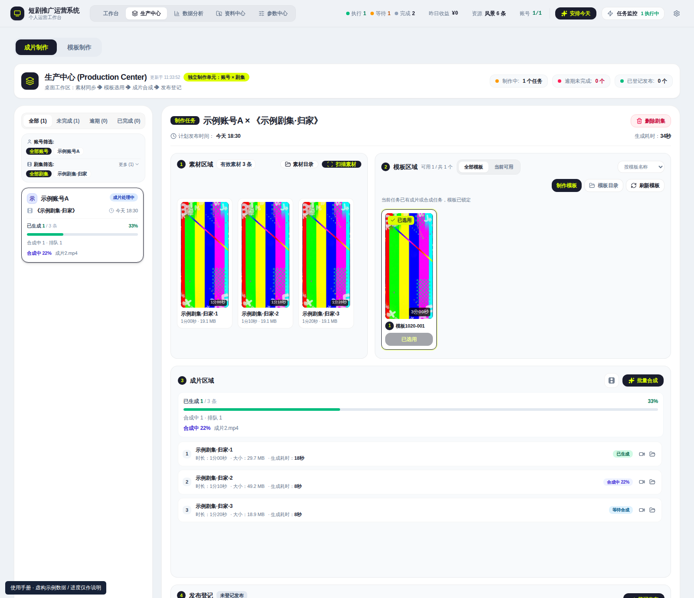
ShortDramaPlatform_V3_3.0.0_Setup_2026.11.03.2.exe，按向导安装；安装位置用于程序，不是业务视频存放位置。ShortDramaPlatformV3 文件夹，再运行 ShortDramaPlatformV3.exe；不要只复制 EXE 或漏掉 _internal。短剧推广运营系统。程序安装目录与业务目录分开。选了新盘，旧盘文件仍在旧位置。要继续旧任务及历史使用次数，按迁移与备份处理，不能只改盘符或只复制模板 MP4。
| 入口 | 主要用途 | 常见去向 |
|---|---|---|
| 生产中心 | 制作模板、选择账号剧集、导入主素材、合成成片、登记发布和清理。 | 成片区域 / 制作模板弹窗 |
| 资料中心 | 维护业务档案，管理风景原片及可用素材。 | 业务资料 / 剧集资料库 / 生产资源 / 爆款资产 |
| 参数中心 | 设置以后制作模板的时长、风景、贴纸、特效与边条规则。 | 页面中的“模板生成参数” |
| 数据分析 | 采集收益并查看账号、剧集、视频、组合及微信指数。 | 先选数据日期，再看范围和采集状态 |
| 任务监控 / 全局任务中心 | 看三类队列，暂停后续、继续、取消等待项、处理失败。 | 成片合成 / 模板制作 / 风景处理 |
| 系统设置（齿轮） | 数据盘、清理期限、发布时间预设、收益自动采集。 | 修改后点“保存所有配置” |
工作台：当前仍有未完成和演示内容。日常生产以生产中心、资料中心、任务中心与数据分析中的实际记录为准，不依据工作台演示数字判断已生产或已发布。
先检查筛选条件、选中的账号剧集和数据盘，再用对应入口刷新：主素材用“扫描素材”，公共模板用“刷新模板”，风景用“刷新风景”。任务会自动更新；出现“任务状态暂未更新”时，屏幕保留的是上一次结果，不要把它当实时进度。顶栏风景数量可直接点击进入可用风景。
本版新增小V猫“获取账号”：按平台ID预览匹配，已有跳过，待新增可多选并手动关联剧场或在窗口内新建剧场；不会覆盖已有资料。安排任务支持小程序／视频号／插件，按来源获取可挂载或全部剧集并保存选择。
入口：资料中心 → 业务资料 → 对应列表
账号 ID是平台识别账号的字段，不能用昵称代替。安排今天只提供正常账号；“观察、限流、二限、实名、封禁、停用”等状态会影响可安排名单。收益采集则跳过“停用”，两处筛选口径不同。
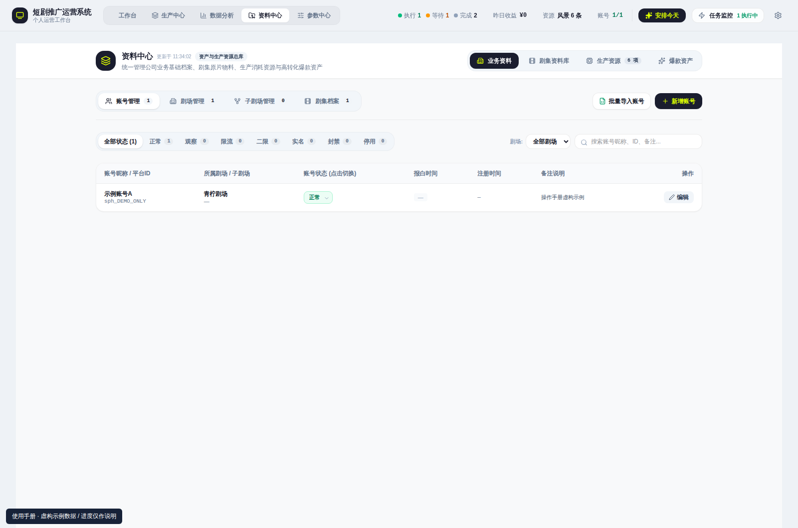
| 列 | 字段 | 要求 |
|---|---|---|
| 1—3 | 账号昵称 / 账号ID / 剧场 | 必填，剧场名称核对已有资料。 |
| 4 | 子剧场 | 可空，空值保留。 |
| 5 | 状态 | 可空，默认“正常”。 |
| 6—8 | 报白时间 / 注册时间 / 备注 | 可空。日期和备注不要串列。 |
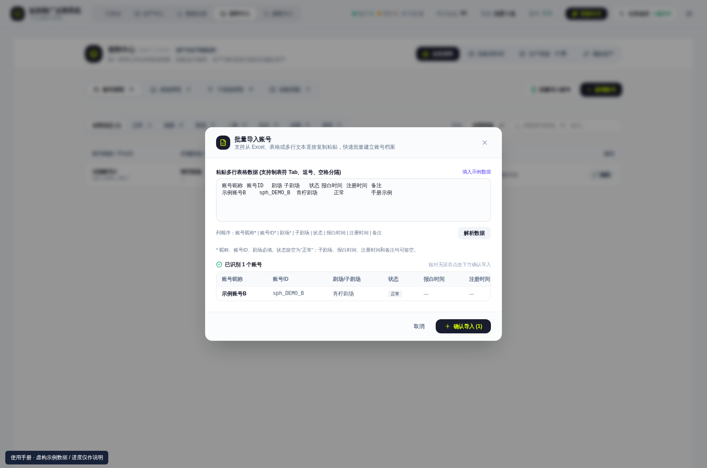
临时不使用账号或剧场时优先调整状态，保留身份。已有生产任务的账号或剧集会被阻止删除；剧场关联账号或子剧场、子剧场绑定账号时，也不能直接删除。不要为了让删除按钮通过而随意删生产记录。
剧名变化使用剧集的改名入口并核对历史名称；历史别名参与识别，同一部剧不要反复新建档案来替代改名。删除业务档案不是清理成片的入口，生产文件清理去生产中心。
“剧集资料库”以已建业务档案为基础，选择剧集后可初始化资料库档案、打开原片或封面目录，并上传封面。它与生产任务的“素材目录”是两处：把整剧原片放进资料库，不会自动变成待合成主素材。
剧情知识库、A+A 生产资料、部分标签与编辑资料入口仍为预留或前端状态；爆款资产的标记、应用到制作尚未形成完整持久化生产闭环。不要据此认为文件已永久归档或新任务已建立。真人图片和引流视频可在生产资源中管理查看，目前没有自动用于新 FFmpeg 模板/成片。
入口：资料中心 → 生产资源 → 风景视频 → 原始风景 / 可用风景
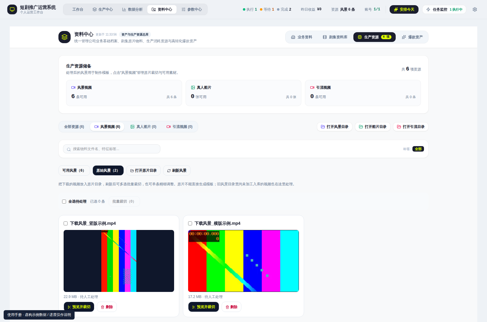
30秒以内保留整段，长片随机切成主要15—28秒的时间段，全部无声、每份不超过30秒。竖屏若有3块取景、3个时间段，共输出9份短片；横屏默认保留完整画面。时间切法提交时固定，重试不重抽。全部结果入库并核对后才删除原片。此项用于2026.10.25.3轻量更新及最新源码，2026.10.25.2完整包和.1→.2轻量包不包含。
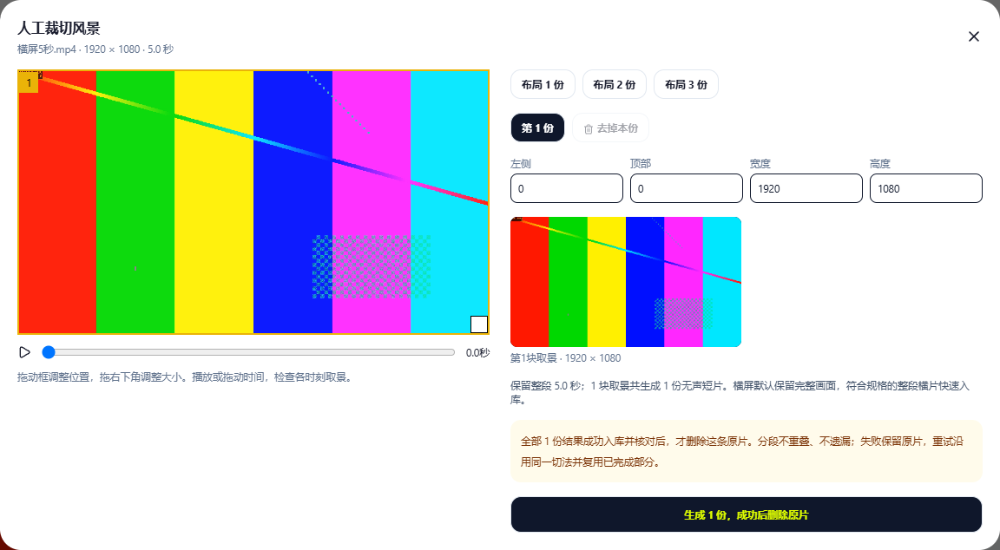
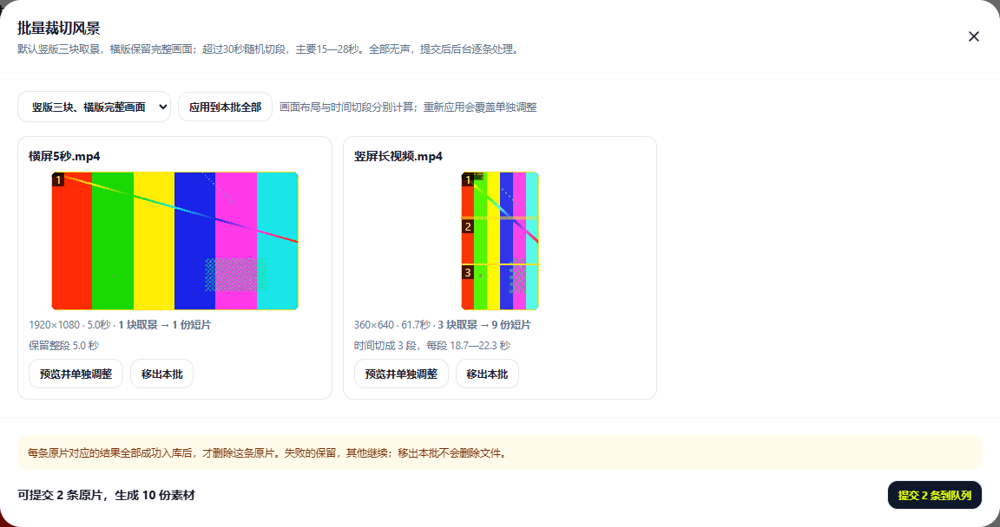
| 情况 | 软件实际处理 | 你的下一步 |
|---|---|---|
| 一条原片的全部份成功 | 完整检查、自动命名入库，再删除这条原片并清除关联。 | 去可用风景抽看结果。 |
| 其中一份失败 | 保留原片与已经验证的部分，后续其他原片照常处理。 | 看失败原因，修复后点“重试制作”。 |
| 媒体成功，但原片删除失败 | 记录未完成原因，不需要重新裁切所有结果。 | 关闭占用原片的播放器，再重试。 |
可用结果自动命名为 风景000001.mp4 等连续编号，不覆盖已有文件。新任务输出无声、30帧、每份30秒以内。符合条件的整段横屏直接复制视频流并去声音，保留原分辨率；需要裁切或转码时按取景比例处理。分段完整覆盖原片时间轴，成功结果各自独立管理；旧素材和旧排队任务不自动重做。
一条可用风景实际排入一份成功模板的播放时间轴，计一次；只播一部分也计一次。模板内部重复播放不额外计次；该模板以后生成多少条成片，也不再增加风景次数。抽中但未播到的候选不预留、不计次，不因本模板触发用满删除。
卡片显示“已用 / 上限 · 占用 · 剩余”。例如上限 5、已用 2、排队预留 1，则当前剩余 2。排队和执行仅为实际播放素材预留额度，成功转为已用，失败、取消或中断释放占用。默认上限 5，在模板参数中配置。
用满后不再被抽取；无等待或运行引用且处理事务结束后，系统删除这个可用风景视频，保留使用账。已做好的模板仍有独立缓存，不因此失效。此项修复用于最新源码版与2026.10.25.2安装版；旧等待任务释放未播到候选的多余预留，历史成功用量保留，过去已删除文件不会自动恢复。
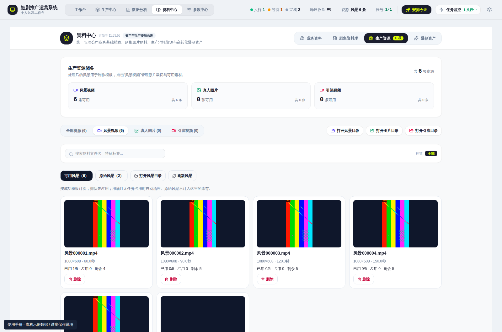
列表点“删除”，或预览点“删除此视频”，确认文件名后点“确认删除文件”。这是永久删除，软件内不能撤销。原片删除会清理相应失败处理记录，已入库结果保留；可用风景删除保留历史次数和已有模板。正在排队或执行的任务引用它时，软件拒绝删除，先处理队列。
入口：参数中心 → 模板生成参数；也可从模板制作点“生成参数”跳转
已创建的模板批次保留当时参数，修改画面参数不会改变正在制作或已经完成的模板。模板与素材使用上限立即生效，会影响现有模板对新剧是否可选；不要为了修改未来模板画面而误改这个上限。风景及真人图片使用上限也会影响现有库存：保存后立即检查用满清理。若把上限降低到某条风景已用次数以内，且它没有任务占用，该可用风景文件可能立即被删除；调低前先核对库存。已经占用的任务不会因此重新抽取。
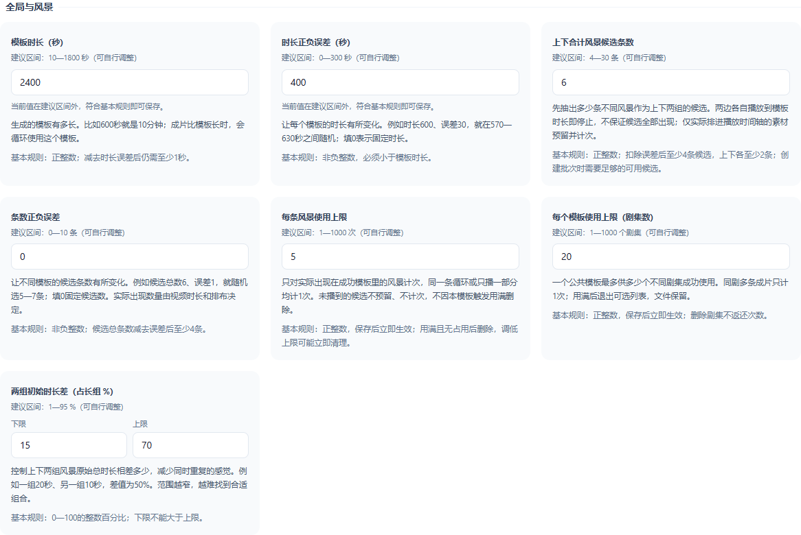
风景按实际播放计次的修复已纳入2026.10.25.2，2026.10.25.1安装包不包含。建议区间可超出，成对输入框是随机下限与上限。
| 参数 | 默认值 / 建议区间 | 用途、调整影响及基本规则 |
|---|---|---|
| 模板时长（秒） | 600 / 10—1800 | 生成的模板有多长。比如600秒就是10分钟；成片比模板长时，会循环使用这个模板。 基本规则：正整数；减去时长误差后仍需至少1秒。 |
| 时长正负误差（秒） | 30 / 0—300 | 让每个模板的时长有所变化。例如时长600、误差30，就在570—630秒之间随机；填0表示固定时长。 基本规则：非负整数，必须小于模板时长。 |
| 上下合计风景候选条数 | 6 / 4—30 | 先抽出多少条不同风景作为上下两组的候选。两边各自播放到模板时长即停止，不保证候选全部出现；仅实际排进播放时间轴的素材预留并计次。 基本规则：正整数；扣除误差后至少4条候选，上下各至少2条；创建批次时需要足够的可用候选。 |
| 条数正负误差 | 0 / 0—10 | 让不同模板的候选条数有所变化。例如候选总数6、误差1，就随机选5—7条；填0固定候选数。实际出现数量由视频时长和排布决定。 基本规则：非负整数；候选总条数减去误差后至少4条。 |
| 每条风景使用上限 | 5 / 1—1000 | 只对实际出现在成功模板里的风景计次，同一条循环或只播一部分均计1次。未播到的候选不预留、不计次，不因本模板触发用满删除。 基本规则：正整数，保存后立即生效；用满且无占用后删除，调低上限可能立即清理。 |
| 每个模板使用上限（剧集数） | 20 / 1—1000 | 一个公共模板最多供多少个不同剧集成功使用。同剧多条成片只计1次；用满后退出可选列表，文件保留。 基本规则：正整数，保存后立即生效；删除剧集不返还次数。 |
| 两组初始时长差（占长组 %） | 15—70 / 1—95 | 控制上下两组风景原始总时长相差多少，减少同时重复的感觉。例如一组20秒、另一组10秒，差值为50%。范围越窄，越难找到合适组合。 基本规则：0—100的整数百分比；下限不能大于上限。 |
| 大区域高度（画面 %） | 28—33 / 28—33 | 两块风景区中较大一块占画面高度的比例。数值越大，风景覆盖越多；每个模板随机把这块放在上方或下方。 基本规则：1—100的整数百分比；这里的“大”是区域名称，不会强制与另一组排序。 |
| 小区域高度（画面 %） | 20—25 / 20—25 | 另一块风景区占画面高度的比例。和大区域一起决定上下装饰占多少画面；两个区域的比例可以自行调整。 基本规则：1—100的整数百分比；较高的覆盖比例会遮住更多主画面。 |
| 蒙版位置（本区域 %） | 40—55 / 40—55 | 控制风景与主画面的融合分界。以各自风景区域为基准，数值越大，边缘风景向画面中间保留得越多。 基本规则：0—100的整数百分比；会取整为实际像素。 |
| 羽化宽度（本区域 %） | 55—80 / 55—80 | 控制风景边缘变透明的过渡宽度。越大越柔和、过渡越宽；0表示直接切换的硬边。 基本规则：0—100的整数百分比；会取整为实际像素。 |
| 贴纸整体透明度系数（%） | 80 / 1—80 | 控制原来上下16个装饰贴纸的显眼程度。越大越明显，0表示看不见；不会改变下面独立全屏贴纸层的透明度。 基本规则：0—100的整数百分比。 |
| 每模板特效类型数 | 3—5 / 1—23 | 希望一个模板使用多少种全屏特效。多则变化丰富，少则风格统一；实际种类还受素材库、分段和双特效组合影响。 基本规则：正整数；超过可用种类时按可用种类安排。 |
| 单段特效时长（秒） | 30—60 / 10—180 | 每一种特效连续出现多久。时间短则切换频繁，时间长则画面更稳定；模板最后一段按剩余时间截断。 基本规则：正整数；下限不能大于上限。 |
| 特效基准强度（%） | 90—100 / 1—100 | 控制普通特效的明显程度，越低越淡。部分整幅颜色处理类特效使用自身的强度规则，不完全跟随这个百分比。 基本规则：0—100的整数百分比。 |
| 双特效时长占比（%） | 15—30 / 0—30 | 希望有多少时间同时出现两种特效。0表示不安排双特效；短于120秒的模板不强制安排，实际比例还受分段和组合素材影响。 基本规则：0—100的整数百分比；这是目标比例，不保证每个模板精确达到。 |
| 特效切换过渡（秒） | 1—2 / 1—2 | 一种特效换到另一种时，渐变持续多久。越长越柔和，越短越利落；实际过渡不会超过相邻两段中较短的一段。 基本规则：正整数；过长时自动收短到相邻片段能容纳的时长。 |
| 左右边条宽度（像素） | 5—10 / 5—10 | 控制画面左右动态装饰边条有多宽，两边分别从范围抽取。数值越大越显眼，也会覆盖更多主画面。 基本规则：1—1080的整数像素；1080是画面本身的宽度。 |
| 启用全屏贴纸叠层 | 关闭 / 按需启用 | 开启后，用独立素材库里的贴纸铺排整个画面，再整层调淡。关闭时不制作这一层。 基本规则：用于新建模板，已有模板不自动改变。 |
| 每模板叠层贴纸数量 | 24—48 / 1—64 | 全屏淡贴纸层选多少个不同图案。数量越多越密，越少越疏；下限与上限相同就是固定数量。 基本规则：正整数；实际抽取量超过独立素材库库存时，会提示素材不足。 |
| 贴纸叠层可见程度（%，越小越淡） | 2 / 1—100 | 这整层贴纸有多明显。例如2%只隐约可见，100%最明显，0表示完全看不见。不会影响原上下装饰贴纸。 基本规则：0—100的整数百分比；需要完全停用这一层时可关闭开关。 |
| 启用真人图片叠层 | 关闭 / 按需启用 | 开启后，从真人图片素材中选图、拼满全屏并整层调淡。关闭时不抽取图片，也不为新模板预留图片次数。 基本规则：用于新建模板，已有模板不自动改变。 |
| 每模板真人图片数量 | 6—6 / 1—30 | 一份模板选多少张不同真人图片。6张时为两列三行；其他数量自动分区，保持图片比例裁切铺满。 基本规则：正整数；需要足够的可用图片和剩余使用名额。 |
| 真人叠层可见程度（%，越小越淡） | 2 / 1—100 | 控制整幅真人拼图的明显程度。2%偏淡，越高越明显；启用状态下即使设为0，也会选图并按成功模板计次。 基本规则：0—100的整数百分比；不想用图或计次时请关闭图层。 |
| 每张真人图片使用上限（成功模板数） | 5 / 1—1000 | 一张图片最多参与多少个成功模板。失败不计次；用满且无排队占用后删除原图片，已完成模板仍可合成。调低可能立即触发清理。 基本规则：正整数；删除模板或重导入同内容图片不重置次数。 |
60秒模板、20条风景候选，若实际上下合计只播到6条，只预留并计次这6条，其余14条不占次数。循环或部分播放同条只计1次。创建时仍需20条可用候选。旧等待任务多余预留自动释放；历史成功用量保留，过去已删除文件不会自动恢复。
输出画幅固定 1080 × 2400，30 帧/秒，当前不提供任意分辨率和帧率配置。
抽一批素材分上下两组，互不共用，每组至少两条。各轮重新打乱顺序，轮内和跨轮都避免同一条紧接自己。高度一大一小，蒙版与羽化分别抽取。
从单素材库重新抽系列与 16 个素材，上下各 8 个，组合排布和动画。历史 93 套仅为参考，不限制新模板从中选；每份新模板重新组合。
从类型、变化版、组合、取样起点、时间段及强度共同变化。双特效优先使用提前合成的一层组合资源，减少运行时重复计算。
抽一个有效画面较满的循环纹理，再抽左右宽度、取景位置与起点。动的是纹理内容，两侧显示位置固定。
随机性增加组合数量，但不会保证任意两份在视觉上绝不相似。完成后仍建议抽看多个模板；不能只依赖模板名称不同判断效果差异。
入口：生产中心 → 模板制作
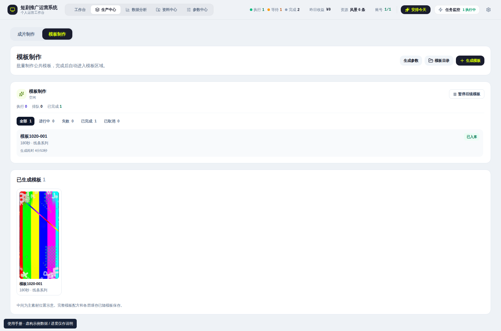
中间是主素材位置的示意背景。真正合成时，系统读取已保存的效果画面与透明信息，将主素材融合进去，不把灰色示意背景覆盖到主素材上。
预览 MP4 只是完整模板的一部分，还需要同名 .template.json 和系统数据内的模板包。不要手动改名、替换或仅复制 MP4 来当作完整模板。缓存缺失时应重新制作模板，不会在每条成片阶段偷偷补做各层。
抽素材、确定排布
准备动画与融合
生成效果缓存与预览
读取主素材
复用完整模板周期
必要混合、编码、校验
| 例子 | 成功使用次数 |
|---|---|
| 《示例剧集·归家》第一条成片成功 | 该模板增加 1 次。 |
| 同一部剧继续用同一模板生成第 2、3…条成片 | 不再增加。 |
| 另一部不同剧集首次用这份模板成功 | 再增加 1 次。 |
| 仅预览、选中，或全部失败 / 全部取消 | 不计成功次数；排队可能暂时预留名额。 |
| 发布后清理、删除生产卡片 | 已消耗次数保留，不退回。 |
同剧身份结合剧集档案与别名识别。达到上限后，新剧不再看到可选卡片；已经成功使用的同剧仍可补做。同一部剧在不同账号之间不能重复选用同一个模板，这是另一个独立限制，不能用“只计一次”来绕过。
模板区域的“刷新模板”会核对真实文件，缺失或已变化的模板不再作为正常可用项。用满的模板是停止供新剧选用，不等于删除文件。
人工删除从模板预览内操作，先看确认说明。等待或执行中的成片引用模板时会被阻止。确认后预览 MP4 和配方移入模板回收目录，完整效果缓存、既有成片与成功计次保留；软件没有提供一键恢复入口。已人工删除或预览缺失的完成项不再显示在模板制作记录中。
模板包含风景整理、贴纸动画、特效准备、效果预合成、编码和校验。显卡编码工作只占其中一部分，CPU 缩放、透明混合、磁盘读写也影响速度。显卡总体占用不高，不足以判断是否用了硬件编码。
看任务阶段和处理帧数是否继续增加。连续没有进度时按故障处理保留原因；不要在制作中手动删缓存，或用缩短正式视频、降低帧率来临时绕过问题。
计划只选日期；实际发布时分在自动发布工作台确定。左侧卡片长按可排序，自动合成开关记住关闭前的状态。“制作模板”从模板区域打开独立弹窗。标题左侧封面支持左键替换、右键编辑；剧集和羊头两套各有原图及最多3张修改版，羊头选用修改版时显示第二张，五套共用文字模板可复用。
入口：顶部“安排今天” → 安排今日制作与发布
计划发布时间用于安排和列表管理，不会自动把视频发布到外部平台。安排窗口中的旧剪映队列说明不是新 FFmpeg 任务已自动开始的证明；仍须导入主素材、选模板并提交批量合成。
新 FFmpeg 链路保持原时长、原速度和原声，不自动替你做旧剪映的裁头尾、AI 留存判断或 BGM。中插/尾插已接入FFmpeg：参数中心设置全局门槛和位置范围，生产中心素材区设置当前剧集，素材卡左上角“⋯”设置本片例外。需要剪内容时先处理主素材，再导入；避免合成后才发现开头结尾不合适。
原文件名含“羊头”的新视频重命名时保留“羊-”前缀。首次扫描先普通、后羊头；已有正确编号时旧文件名固定，从最大序号后继续，优先处理与最后一条同类型的新视频，再处理另一类。该类型没有新文件就直接处理另一类。例如最后是“羊-剧名-10”，新加入“7.mp4”“8.mp4”“羊头.mp4”，结果为“羊-剧名-11.mp4”“剧名-12.mp4”“剧名-13.mp4”，原来的1～10不动。已有成片记录的任务也可追加扫描。成片区和预览直接显示完整文件名，含“羊-”与后缀。
依次检查日期范围、状态筛选、账号筛选和剧集筛选。已登记发布的任务可能不在“待制作”范围内。资料中心存在剧集档案，不等于已经给账号安排生产；回“安排今天”确认是否已创建。
入口：生产中心 → 选中任务 → 成片区域“批量合成”
| 内容 | 当前行为 |
|---|---|
| 主素材画幅 | 等比缩放并居中裁取到 1080 × 2400，画面边缘可能被裁去。重要字幕或人物贴边的素材要先检查。 |
| 时长与帧率 | 保留源视频时长，按 30 帧对齐；源帧率不同会做帧率适配。 |
| 原声 | 有音轨则保留原声内容，编码为 AAC；本来无声的素材不会凭空添加声音。 |
| 模板较短 | 重复完整模板周期，最后截断；主素材和原声连续播放，不跟模板一起重头开始。 |
| 模板较长 | 按主素材实际所需长度使用，不延长主素材。 |
| 模板固定效果 | 直接复用已准备缓存，仍需将主素材与效果混合、编码并校验。 |
| 编码与体积 | 预览和成片目标约 2500 kbps、峰值 4000 kbps；有声时 AAC 192 kbps。时长和内容会影响实际文件大小。 |
软件会自动检查显卡能力，在支持时加速普通透明、滤色模板的解码、缩放与画面合成。已有模板继续可用，不用为了升级全部重做；新制作的模板可使用更适合显卡读取的缓存。少数特殊效果或不支持的素材会继续使用兼容方式，实际速度以本机任务耗时为准。
输出保持1080 × 2400、30帧、9:20竖屏画幅和素材原声；完整成片检查仍然保留。若任务行提示使用CPU编码，查看中文原因和“本次检测详情”，按提示处理显卡驱动后再重试；没有提示不代表所有处理步骤都在显卡上。
“生成完成”表示处理和媒体校验完成，画面是否符合你的审美仍由实际播放决定。首次新模板、新电脑、新素材类型都建议抽查。
单条“生成耗时”来自实际执行记录，不把排队时间算进处理速度。生产区域汇总按相关条目执行耗时累加，可能与墙上经过的总时间不同。比较性能时用同一主素材、同一模板，分开看模板一次性制作耗时和成片复用耗时。
入口：顶部任务监控 → 打开任务中心；各制作页也有对应队列
| 队列 | 一条任务代表什么 | 完成结果 |
|---|---|---|
| 风景处理 | 一条原片及它的全部裁切份数。 | 全部成功入库后删除这一条原片。 |
| 模板制作 | 一份独立随机模板。 | 公共模板及完整效果缓存。 |
| 成片合成 | 一条主素材与已选模板。 | 一条带原声的成片（原素材有声时）。 |
小窗适合快速查看当前任务；完整任务中心可以按“全部、等待、处理中、已完成、失败、已取消”等状态筛选，看完整原因并执行可用操作。三类队列的暂停互不替代。
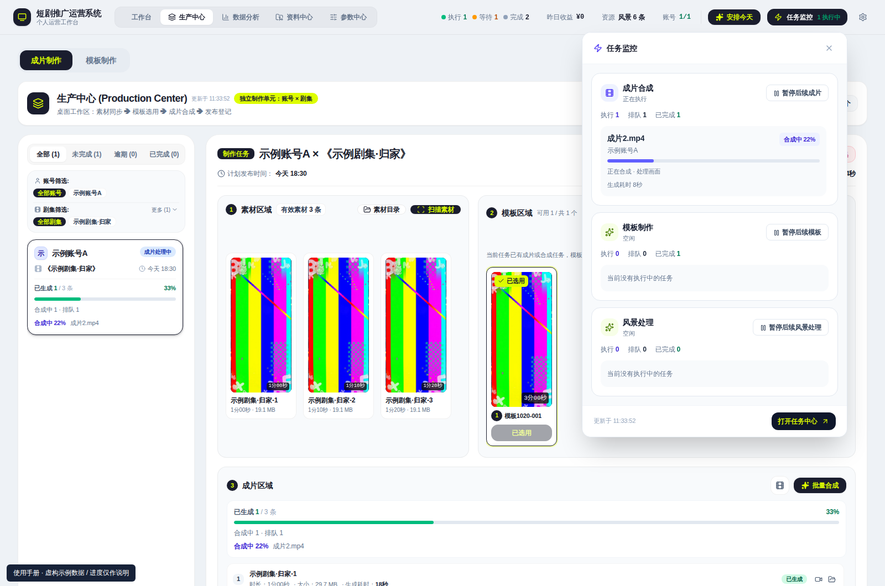
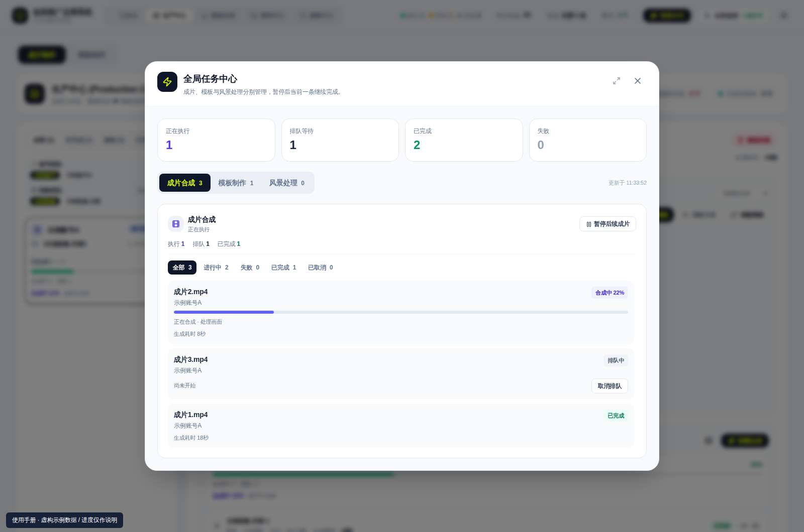
| 操作 | 实际发生什么 | 适合何时用 |
|---|---|---|
| 暂停后续… | 当前一条继续完成，后续等待项不再开始。 | 准备离开、修改后续安排或等待检查结果。 |
| 继续… | 只恢复该类队列，其他类保持原状态。 | 确认可以继续处理等待任务。 |
| 取消排队 | 只取消尚未执行的一条，释放对应预留；不停止正在处理的一条。 | 不再需要某个等待项。 |
| 重试制作 / 重试合成 | 失败项按已保存配方重试；成片的已取消项也可重试。不会静默另抽一套模板素材。 | 原问题已解决。先查缺文件、占用、空间等原因。 |
处理画面时主要依据实际输出帧数更新，同时区分准备缓存、合成、校验和保存。画面处理结束后仍可能需要检查，因此 99% 不等于已经入库，100% 才表示完成登记。不同阶段速度不同，不要拿前 10% 的时间线性推算总耗时。
关闭预览、切换页面不会取消后台任务。关闭整个软件可能打断处理：重新启动后中断执行项标为失败，等待人工重试；等待项按已保存队列及暂停状态恢复。需要停止后续时先暂停，并等当前一条完成再退出。
部分受监控的 FFmpeg 命令连续 120 秒没有新增输出帧会停止该命令并留下原因。它没有覆盖所有贴纸准备等旧工具步骤，不能理解为“任何卡住都会自动恢复”。
产生外部任务／草稿编号后，文件名后显示挂载或未挂载，任务标题下显示发布位置。显示读取提交时快照，后续改配置不修改旧记录；挂载标签不是平台最终验收。任务暂停只读取状态，不自动恢复。响应不明确时保留任务编号、先核对，不反复点击重新发布。
视频号剧集挂载与定时提交已由用户核对官方后台正常。小程序挂载存在官方编辑页未显示具体剧集的现象，当前待实际公开核验。删除小V猫任务记录不等于撤回平台作品。停止V3后续提交不取消已进入小V猫或平台的任务。
旧“登记发布／撤销发布”入口已从生产界面移除。当前提交成功或生成草稿不会自动写入旧发布登记，也不会启动文件清理。下表的“已登记”指历史已有登记状态；清理前仍须查看预览和路径，不能用发布队列成功替代清理授权。
| 入口 / 条件 | 会删除或移走 | 保留 | 恢复方式 |
|---|---|---|---|
| 未发布生产卡片 → 删除剧集 | 当前账号这条生产任务、主素材、成片、任务临时文件和相关队列、模板选用关系。 | 其他账号任务、剧集业务档案、公共模板和模板缓存、成功使用次数。 | 软件无撤销；重要文件需提前备份。 |
| 已登记发布 → 立即清理 | 本任务的成片、过程产物与关联队列等预览列出的项目。 | 发布登记、收益关联、清理记录；原素材保留到它自己的到期时间。 | 已删除媒体只能从独立备份恢复。 |
| 发布后自动过程清理 | 默认实际发布时间满 24 小时后处理任务过程文件与成片。 | 原素材暂留；公共模板和次数账保留。 | 同上。 |
| 发布后自动原素材清理 | 默认实际发布时间满 7 天后清理原素材，回收相应空目录。 | 发布主记录与历史计次。 | 同上。 |
| 原片全部裁切成功 | 对应风景原片。 | 所有成功入库切片。 | 软件不保留原片备份。 |
| 可用风景用满且无占用 | 用满的处理后风景文件。 | 使用账、已经生成的模板。 | 软件无文件恢复入口。 |
| 模板预览 → 人工删除 | 模板预览和配方移到模板回收目录，退出可用列表。 | 效果缓存、已有成片、历史使用账。 | 无一键恢复入口；需要核对完整包后人工处理。 |
默认过程文件 24 小时、原素材 7 天，可在设置修改。期限在登记发布时保存：新设置作用于以后新登记的任务，不能假定旧任务会自动延长期限。
删除一个任务后，公共模板的已用次数仍保留，这是为了记录实际用过多少部剧；它不是残留错误。相应成片队列仍显示时，先查看是否属于其他账号或同剧的另一条生产任务，再排查刷新或失败原因。
入口：数据分析；右上角“采集收益”打开采集中心
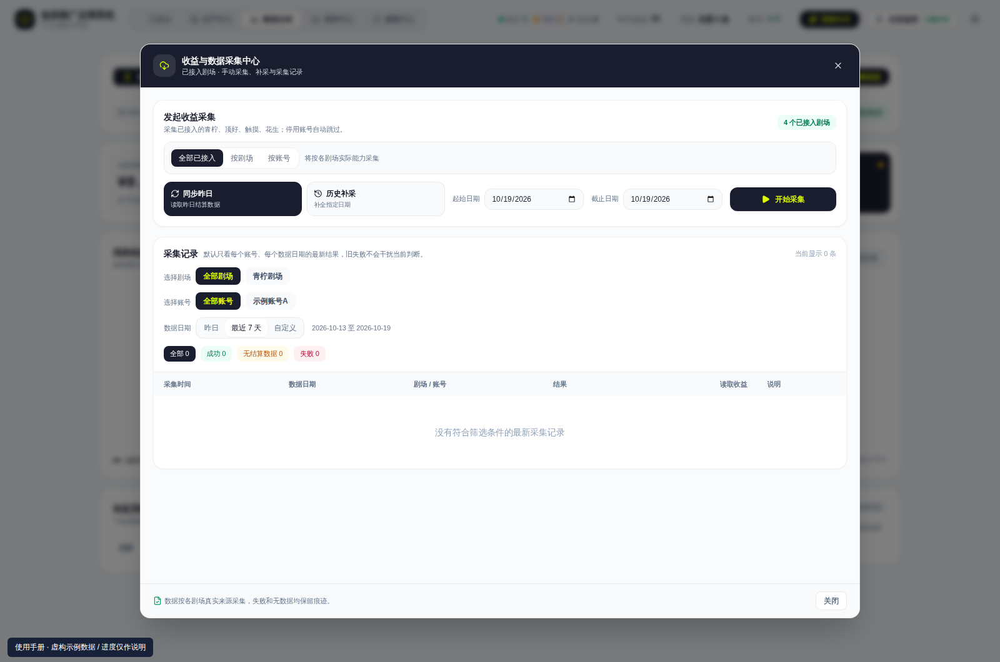
| 来源 | 目前能采集到的内容 | 使用时注意 |
|---|---|---|
| 青柠 | 按日收益与逐条视频明细，包括播放、收益等。 | 明细与来源总计核对后写入，可用于视频归因。 |
| 顶好 | 按日账号收益。 | 来源返回 0.00 但无法确认身份时记待确认，不当作已核验零收益。 |
| 触摸、花生 | 账号累计收益口径。 | 范围采集读取截止日期对应查询结果，不能当作每天新增收益相加。 |
同账号同数据日期重复采集会更新对应数据，不因为重采就新增一笔收益；采集尝试日志会保留痕迹。来源网站或接口变化可能导致失败，以这次采集结果和说明为准。
| 状态 | 应该怎么理解 |
|---|---|
| 成功，金额 0.00 | 来源明确返回且校验通过的零收益。 |
| 无结算数据 | 来源正常响应但没有该日结算记录，不能等同于零收益。 |
| 失败 / 待确认 | 读取、匹配、数值或对账未通过，暂不作为完整结果。 |
| 未采集 / 待补采 | 还没有可用结果，应先采集。 |
| 页签 | 适合回答 | 基本操作 |
|---|---|---|
| 收益 | 选定日期内各来源、账号的收益与完整性如何？ | 选日期和剧场，先看采集完整性，再看金额和趋势。 |
| 账号 | 哪些账号值得继续安排？ | 筛选账号与日期，对照状态、收益及可用明细；不要只看未采集时的空值。 |
| 剧集 | 哪些剧集在已有样本中表现更好？ | 核对名称匹配和数据范围，再比较表现。不是自动剧情评分。 |
| 视频 | 哪条平台视频带来播放和收益？ | 查视频 ID、剧名、账号、明细和内部成片关联。 |
| 组合 | 账号 × 剧集组合表现怎样？ | 在同样日期与来源条件下对照，缺少明细的来源不应强行拆到单视频。 |
| 微信指数 | 指定剧名关键词的搜索热度如何变化？ | 先初始化本机连接，维护关键词，再验证采集。 |
视频、剧集、组合等细分分析主要依赖青柠明细，不能因为四个来源能采集总收益，就认为四个来源都支持逐条视频分析。页面提示读取条数达到上限时，应缩小日期或账号范围；视频列表当前最多读取 12,000 条，截断结果不能当全量。
连接初始化会涉及本机临时代理和采集证书，用完必须“停止并清理”。连接资料由当前 Windows 用户加密保存，不随软件自动迁移到另一台电脑。等价词仍保留各词独立曲线，不自动相加。
入口：右上角齿轮 → 系统设置 → 修改后“保存所有配置”
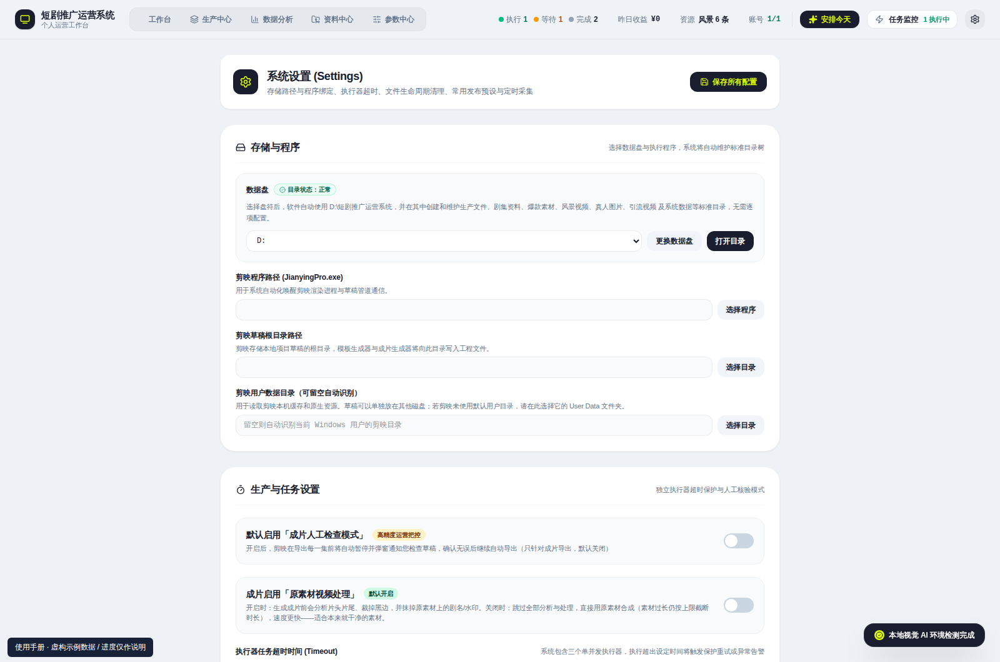
| 项目 | 作用 | 保存前检查 |
|---|---|---|
| 数据盘 | 选择业务目录所在盘，不自动搬迁旧数据。 | 目标盘真实存在且空间够；已有业务先按迁移流程备份。 |
| 原素材保留天数 | 登记发布后原素材的清理期限，默认 7 天，允许 1—90 天。 | 只影响以后登记计算的期限。 |
| 发布后短期清理小时数 | 过程产物及成片清理期限，默认 24 小时，允许 1—168 小时。 | 确认已经完成发布与必要留存。 |
| 常用发布时间 / 默认发布日期偏移 | 安排任务时带入预设，0 天当天、1 天明天，任务内可再调整。 | 不代表外部自动发布。 |
| 收益自动采集定时任务 | 软件运行期间到时间采集昨日；当天首次打开时，已错过时点合并补采一次。 | 开关、时间点与账号归属正确，保存所有配置后生效。 |
| 界面中能看到的内容 | 当前 V3 FFmpeg 的实际情况 |
|---|---|
| 参数中心的中插、尾插 | 已接入FFmpeg。中插可设“视频短于”和位置下限/上限，均输入分:秒；当前账号×剧集、单素材可覆盖或恢复跟随。仅后续新提交生效；排队和重试沿用原配方。祝福语、引导语文案卡已移除。 |
| 剪映程序、草稿目录、用户数据目录 | 供旧兼容流程使用，新的模板和成片生产不依赖它们。 |
| 成片人工检查、原始素材处理、本地视觉 AI | 继承自旧草稿流程，不会让新合成自动剪掉头尾、调用 AI 或进入剪映导出。 |
| 旧执行器超时、导出调试 | 不能用这些值推断新 FFmpeg 队列的限时或无进度保护。 |
| 工作台探索数据、剧情知识库预留、部分爆款资产操作 | 尚非完整持久化生产功能；以实际业务模块的记录为准。 |
本版本设置页中的“下载标准模板”“导出基础资料”“导入基础资料”“全量数据快照”目前只显示前端提示，没有对应的真实文件生成或导入备份流程。尤其“备份成功”提示不代表已有备份文件。
“运行基础诊断自检”会明确提示尚未实现；“打开日志目录”也尚未接通。不要依赖它们判断环境或数据已经安全。基础资料批量导入请用资料中心的真实导入弹窗；备份按下一章手工执行。
“复制诊断报告”提供当前配置摘要，便于说明数据盘和设置，不能替代实际日志或完整环境检查。
| 对象 | 包含什么 | 换电脑是否自动过去 |
|---|---|---|
| V3 安装包 / 完整便携目录 | 程序、界面、FFmpeg、贴纸/特效/边条运行素材。 | 按安装包复制安装。 |
| 业务目录“短剧推广运营系统” | 账号与任务记录、风景、主素材、模板及效果缓存、成片、使用次数等业务数据。 | 不会随软件自动迁入，也不会跨电脑同步。 |
| 本机设置与微信指数连接 | 当前电脑数据盘设置、机器环境、当前用户加密连接资料。 | 需目标机重新核对；微信连接需重新初始化。 |
| 本手册 | HTML、样式、脚本和截图。 | 复制完整“使用手册”文件夹即可离线打开。 |
系统数据/tg 等效果包与账本同样需要保留。从零开始：安装程序、选数据盘，重新建立账号剧集，导入风景和主素材，再按第一章做短片验收。
承接旧业务：先完成完整备份，目标电脑尽量保留相同盘符和业务路径，复制完整业务目录，再核对设置、账号数量、模板可预览且可复用、使用次数与发布记录。当前部分记录保留绝对路径，跨盘符不是自动修复流程；遇到路径不一致先处理迁移，别只改盘符继续生成。
同一台电脑上的 V2 和 V3 保留单实例与共享数据规则，只能轮流运行。独立程序安装目录不代表共享数据库可以随意降级；升级前保留稳定备份。
先做一份短模板与一条带声短成片，检查完整解码、画面、声音与速度，再批量运行。本机曾跑通的测试不能替代另一台电脑的驱动、磁盘、权限和业务路径检查。
优先按下面的顺序排查。遇到错误先留下任务名、错误原文、发生时间和实际文件位置；别反复提交或先清空缓存。
模板只抽“可用风景”。先完成裁切入库，再检查剩余额度、队列占用、无效文件和抽取条数。上下组还要求素材互不相同、每组至少两条以及初始时长差；一批完全同长度的素材可能不满足分组规则。
查看风景库存与计次 →按原片独立判定。一条的所有份都成功才删原片，某一份失败会保留原片和已验证部分，其他原片继续。修复原因后用失败项“重试制作”，不要重新导入同一原片另开批次。
93 套是历史参考。新模板从单贴纸库抽系列和单素材，重新排布、动画；做好的组合缓存只给这份模板复用。复用同一模板的成片保持同样贴纸规则。
新的画面参数用于新建批次；已有批次保留提交时的配方。模板使用上限立即影响可选资格，风景使用上限还会影响现有库存并触发用满清理。想比较新画面，需要另外生成一个新模板。
直接循环完整模板周期并截断到主素材长度，不按时长扩建模板。成片仍要解码主素材、混合画面、编码和检查，所以复用不等于零耗时。
播放只用预览 MP4；合成还需完整模板包。检查同名配方、业务目录和系统数据中的缓存是否完整，尤其是否只复制了 MP4 或改过数据盘。
同剧第一条成功计一次，之后同剧的成片不加次数。历史成功使用账必须保留，删卡片或发布后清理不退回名额。界面“占用”是排队预留，与“已用”分开看。
检查是否达到新剧使用上限、同剧跨账号选用限制、文件变化、手动删除或当前筛选。用满不必删除文件，同剧补做资格与新剧不同。
新成片使用固定 1080 × 2400、等比居中裁取。不同画幅可能裁去左右或上下边缘；先处理主素材取景，再生成一条确认。风景蒙版参数不能代替主素材画幅调整。
暂停是“暂停后续”，当前一条继续完成；三个队列各自控制。等待项可取消，运行项不会因为暂停立即被终止。
99% 可能仍在校验和登记。显卡编码之外还有 CPU 与磁盘工作。先看阶段、更新时间、帧数；确认长时间无变化后按任务失败处理，不仅凭显卡总占用判断。
查看无进度排查 →先确认账号、剧名和任务身份是否为同一条。成功删除应清理相应 FFmpeg 队列；清理失败会保留记录。公共模板制作历史和已用次数独立保留，不是这条成片任务的残留。
不能。先查看最新采集记录与来源口径；只有明确返回零且校验通过才是零收益。累计收益来源也不能直接按每日新增相加。
剧集档案只是身份。还要用“安排今天”给账号建立生产任务，再放主素材、扫描、选模板和批量合成。
当前“全量数据快照”只有提示，没有真实备份执行。请按本手册的完整目录备份方法操作，不能靠这一提示判断已备份。
查看真实备份步骤 →安装软件不等于迁移业务。先核对数据盘与完整业务目录是否迁入，模板缓存、数据库和使用账都需要一起带走。不要在空目录中重复创建大量业务后再覆盖旧库。
提供最小必要信息即可。账号凭证、微信请求模板和真实敏感收入无需写进公开截图；不要先删失败记录或目录。